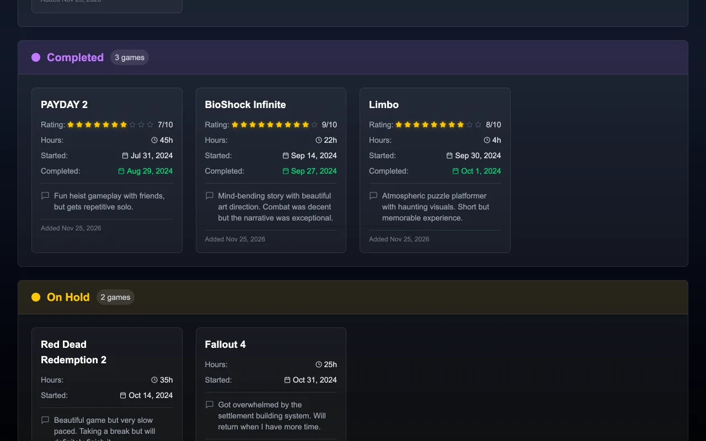
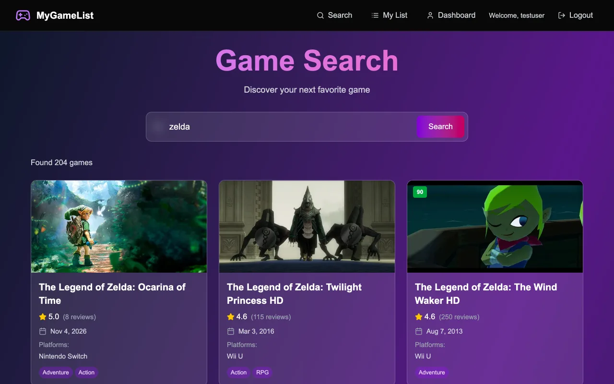
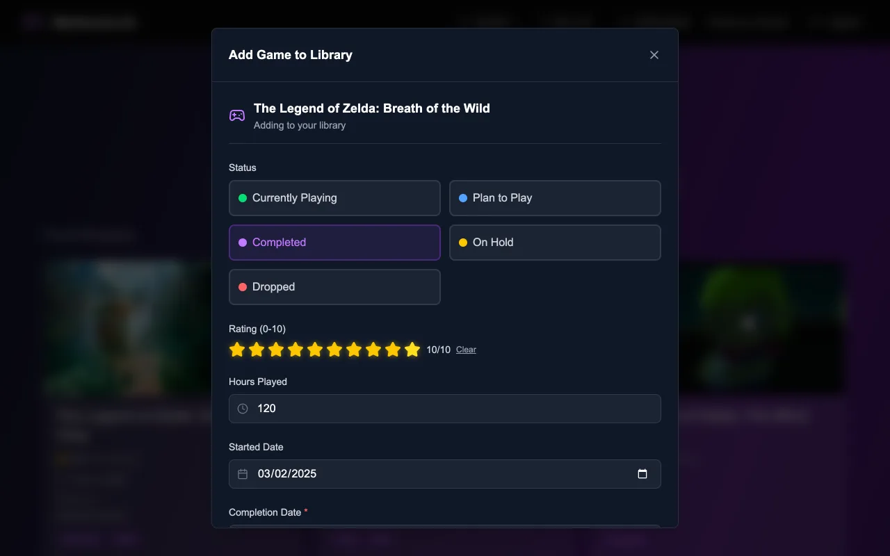

What it does
- Search a catalog of games.
- Track each game with a status (Playing, Plan to play, Completed, On hold, Dropped), a 1–10 rating, a review, hours played, and start and completion dates.
- Every user gets a public profile and game list.
- Email and password accounts, with a forgot-password flow by email.
- Works on phones and desktop, and automated tests check that it does.
How it works
Pages render on the server where they can, and client components handle the interactive parts. Game details come from RAWG. Your list entries live in my database and reference games by ID.
Key decisions
Two database connection strings
- problem
- Serverless functions open many short-lived connections, but schema commands need features a connection pooler doesn't support.
- choice
- The app uses Supabase's transaction pooler. Prisma's CLI uses the session pooler through a separate
DIRECT_URL. - result
- Runtime queries scale with traffic, and migrations still work.
A password reset that leaks nothing
- problem
- Reset links are effectively passwords, and reset forms often reveal which emails have accounts.
- choice
- Random 32-byte tokens, stored only as SHA-256 hashes, expiring after 1 hour, with earlier tokens cancelled on each new request. The form gives the same reply whether the email exists or not.
- result
- A database leak gives nobody working reset links, and the form can't be used to check whether an email is registered.
Tests that don't depend on someone else's API
- problem
- When the free RAWG quota ran out, tests failed for reasons unrelated to my code.
- choice
- Browser tests intercept the search API and serve a fixture response. Tests run against their own Postgres in Docker.
- result
- A failing test points to a real problem in my code.
Two session bugs
Production login always looked logged out
Middleware has to guess whether the session cookie carries the __Secure- prefix used over HTTPS. Behind Vercel's proxy, the request doesn't reliably show the original protocol, so it looked for the wrong cookie. The fix sets that explicitly in production.
"Sign in to add" right after signing in
Login redirects on the client, and the session provider kept the empty session it had cached on the login page. The fix reads the session on the server in the root layout and passes it to the provider, keyed on the user ID so the provider resets whenever someone signs in or out. A Playwright test now logs in, moves to search without a page reload (it plants a marker that a reload would erase), and checks that the add-to-list controls appear.
Testing on small screens
Beyond login, registration and search, a responsive test suite checks that no page scrolls sideways at several screen sizes, that buttons and inputs are big enough to tap, and that no control only works on hover.
Screens



What's next
- Move game data from RAWG to IGDB for higher limits and richer metadata.
- Run the Playwright suite in CI on every push and pull request.